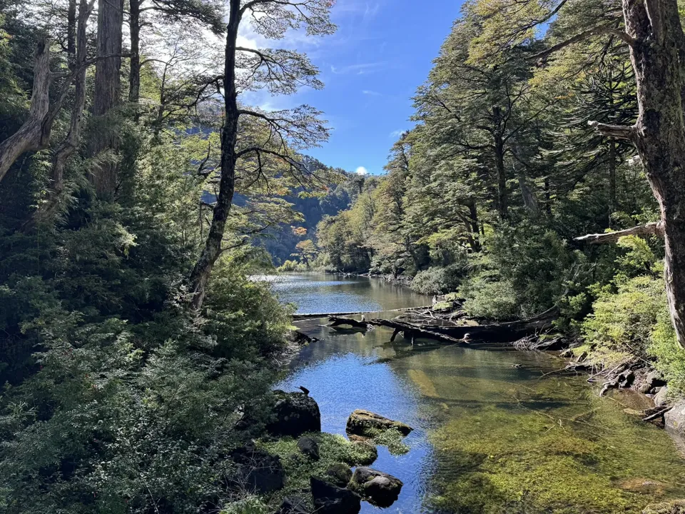
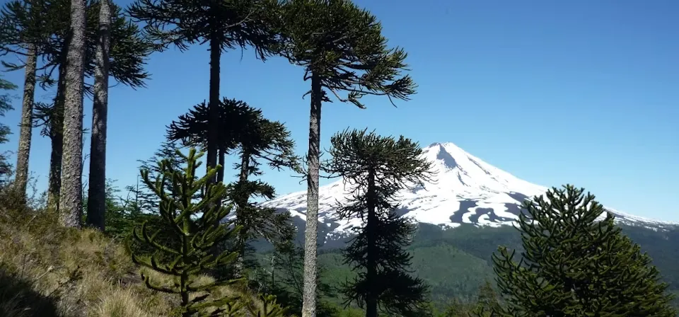

Sendero del Bosque Nativo
Una caminata amable entre árboles y sonidos del bosque.
Ver rutasDesde La Araucanía, Chile
Camina entre bosques, descubre nuevos paisajes y vuelve a conectar con la naturaleza de tu tierra.
Explorar rutas
Bosques, lagos y cumbres. Encuentra tu lugar.
Explora el territorio
Ubícate en La Araucanía y prepara tu recorrido.
Desde Temuco, abre el mapa y explora los paisajes del sur.
El marcador indica Temuco como referencia regional. Las rutas aún no cuentan con coordenadas verificadas.
Consultar rutas y dificultadesUsa Tab para acceder al mapa, las flechas para desplazarte y + / − para cambiar el zoom.
Antes de salir
Referencia urbana. Las condiciones en montaña pueden variar; consulta los avisos oficiales antes de salir.
Datos de Open-Meteo